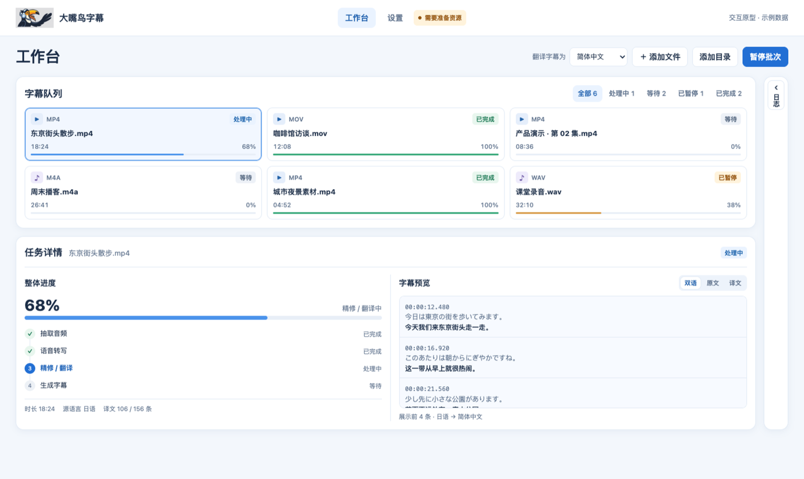
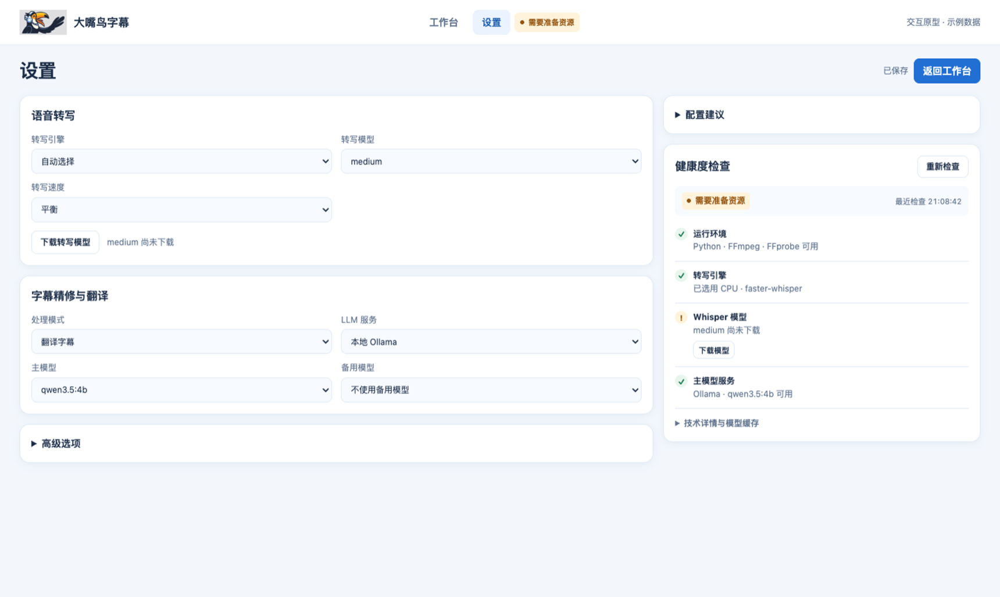

僅轉錄
用 Whisper 辨識對白，產生原語言文字與時間碼的 SRT。
適合會議、訪談與課程用 Whisper 辨識對白，產生原語言文字與時間碼的 SRT。
適合會議、訪談與課程用自選模型調整斷句、標點與措辭，保留原語言與時間軸。
適合整理口語素材選擇目標語言，在同一時間軸查看原文與譯文，也可同時輸出原語言字幕。
適合外語影片與雙語交付任務工作台

模型與健康檢查
依需求下載 Whisper 權重。潤飾或翻譯可使用本機 Ollama 或自備的 OpenAI 相容端點。
在設定中檢查執行環境、引擎、權重與語言模型。
查看設定步驟 ↗